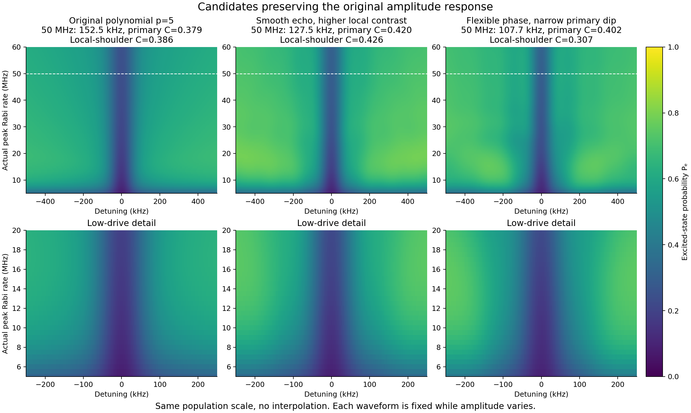
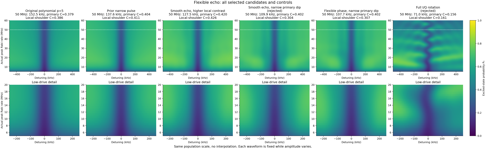
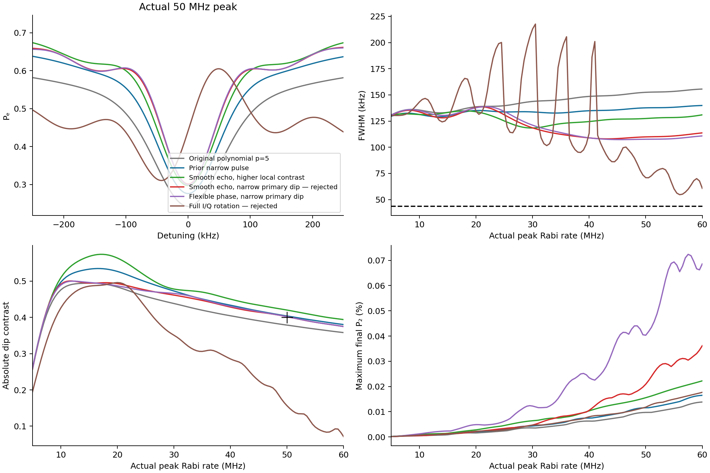
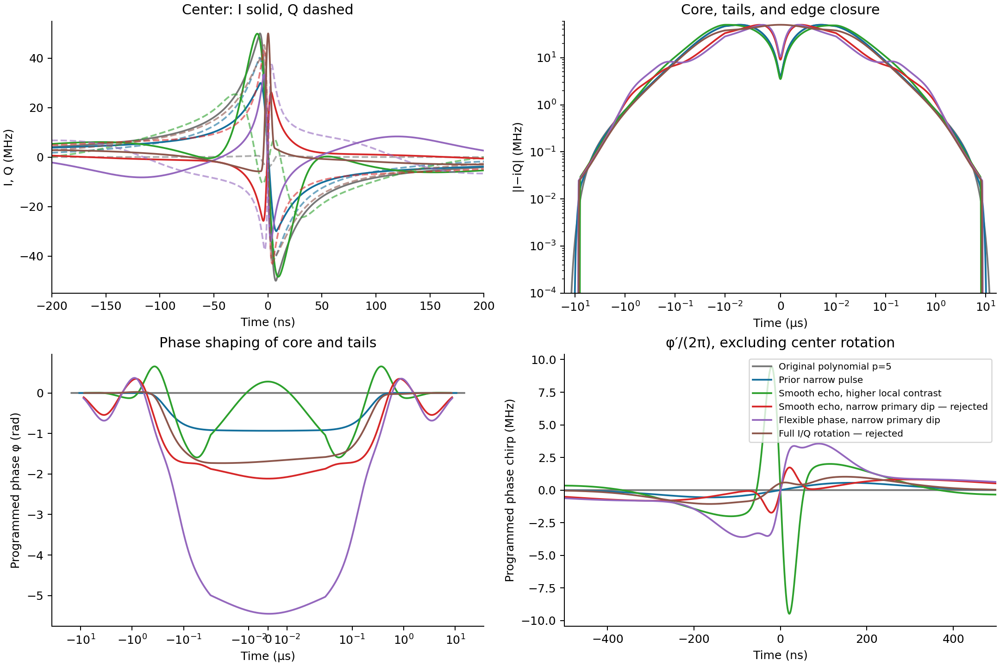
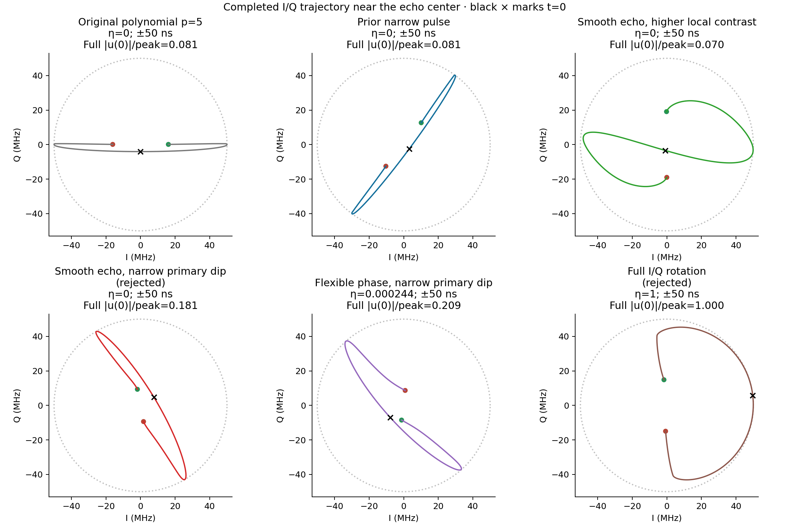
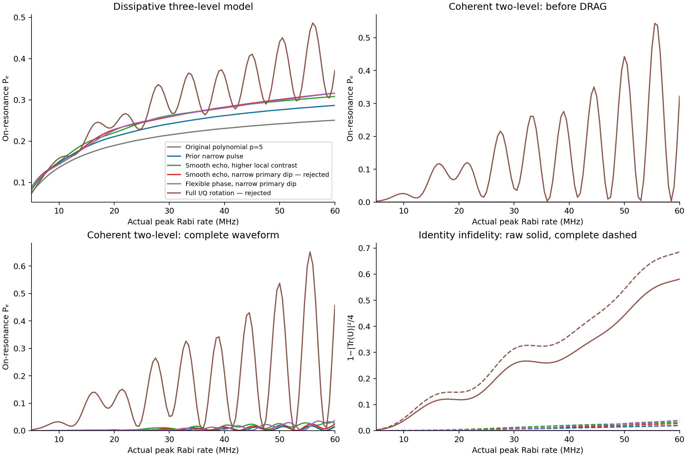
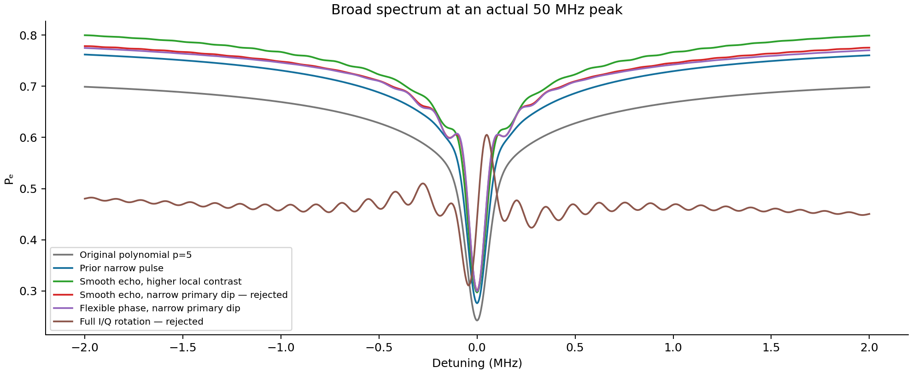
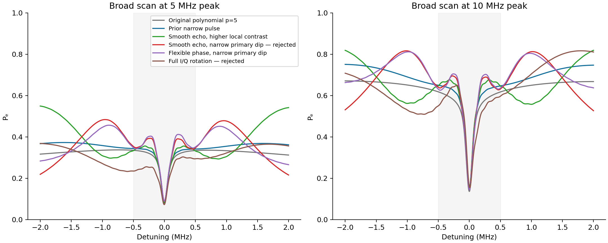

The contrast floor C>0.4 applies at 50 MHz only. Across 5–60 MHz, linewidth and contrast must preserve the original p=5 response. The held-out amplitude grid has 111 points with 0.5 MHz spacing. User constraints are shown separately from center, satellite, and leakage guardrails. Minimum contrast across the band is descriptive, not an extra full-band floor.
Primary contrast and local notch depth are different measurements. Primary C uses the fitted background at |δ|=0.4–0.5 MHz. A broad pedestal can raise this number while the isolated central notch remains shallower than 0.4. The bold local-shoulder column and fixed-offset depth expose this distinction; acceptance under the historical primary metric does not certify an isolated 0.4-depth notch.
| Shape | Primary FWHM₅₀ (kHz) | Primary C₅₀ | Local-shoulder depth₅₀ | Fixed ±0.2 MHz depth₅₀ | Minimum band C | User constraints | Guardrails within ±0.5 MHz |
|---|---|---|---|---|---|---|---|
| Original polynomial p=5 | 152.46 | 0.3787 | 0.3855 | 0.3242 | 0.2577 | FAIL | PASS |
| Prior narrow pulse | 137.63 | 0.4039 | 0.4106 | 0.3430 | 0.2597 | PASS | PASS |
| Smooth echo, higher local contrast | 127.46 | 0.4202 | 0.4260 | 0.3465 | 0.2583 | PASS | PASS |
| Smooth echo, narrow primary dip — rejected | 109.89 | 0.4020 | 0.3043 | 0.3377 | 0.2574 | FAIL | PASS |
| Flexible phase, narrow primary dip | 107.66 | 0.4019 | 0.3066 | 0.3389 | 0.2584 | PASS | PASS |
| Full I/Q rotation — rejected | 70.95 | 0.1563 | 0.1609 | 0.1388 | 0.0712 | FAIL | FAIL |
The fixed-offset depth is min[P(−0.2 MHz),P(+0.2 MHz)]−P(center), where center is the raw minimum within ±0.25 MHz. It uses no background fit. Local-shoulder depth uses the lower nearest shoulder; if a side has no local maximum, its highest sampled probability within ±0.5 MHz is used. Both are diagnostics, with no change to the primary baseline comparison.
The narrow phase-shaped candidate has a very small contrast margin. Flexible phase, narrow primary dip passed a finer-frequency check at peak amplitudes 7.25, 7.5, 7.75, 16.75, 17, 17.25, 50 MHz, using 801 detuning points and a 0.25 ns maximum time step. Its smallest contrast improvement over the original was only 0.0000513 at 17 MHz. The smallest linewidth improvement in this spot check was 0.189579 kHz at 7.5 MHz. These are sampled numerical results, not a guarantee between samples or against model uncertainty. Spot-check metrics and provenance · Population arrays.

Preferred maps PDF. Color limits are 0–1 in every panel; no interpolation. Each waveform remains fixed throughout its amplitude sweep.

All maps PDF

The center parameter η introduces a continuous quadrature component during the echo reversal. It can keep the raw drive away from zero. With η=0 and no odd phase component, the pre-DRAG control is time antisymmetric and cancels exactly in the resonant coherent two-level model. A nonzero η or odd phase removes that guarantee; cancellation must be evaluated rather than assumed. The completed I/Q trajectory includes the full derivative correction. Green/red dots mark the beginning/end of the plotted center interval; the black cross marks t=0.
η=0 does not imply a zero physical I/Q center. The derivative correction can already give a nonzero completed u(0). Each trajectory reports the actual completed |u(0)| divided by its 50 MHz peak; the raw and completed center amplitudes are also saved separately in the waveform audit.


The coherent audit uses independent exact two-level step propagators with midpoint sampling, no T₁/T₂ loss, and both pre-DRAG and completed control. Its refinement error is saved below. Identity infidelity also detects residual phase rotations that an excited-state population alone misses. Dissipative on-resonance population also includes relaxation, dephasing, and multilevel dynamics. The programmed chirp plot excludes the center rotation; signed I/Q ranges, positive/negative-time peaks, and total-waveform chirp above 1% of peak are recorded in the waveform audit.
These are fixed one-at-a-time changes to the repaired candidate, not reoptimized alternatives. Each completed waveform is renormalized to the same actual peak. Removing the extra even-phase terms retains the inherited phase profile. Values use the saved 2.5 kHz detuning grid with a 0.25 ns maximum time step.
| Variant | FWHM at 50 MHz (kHz) | C at 50 MHz | C at 5 MHz |
|---|---|---|---|
| Repaired candidate | 127.475 | 0.42020 | 0.25832 |
| Extra amplitude terms zero | 132.637 | 0.38662 | 0.23189 |
| Extra even-phase terms zero | 127.907 | 0.41823 | 0.12486 |
| Transition fixed at 16 ns | 126.639 | 0.43701 | 0.21346 |
In this local comparison, the extra phase and the approximately 36.8 ns transition mainly protect low-drive contrast. Shortening the transition improves the nominal 50 MHz slice but loses contrast at the start of the amplitude range. Removing the extra amplitude terms loses nominal contrast. This does not establish necessity or global optimality; it explains the observed tradeoff for this fixed pulse.
Ablation metrics and provenance · Ablation population arrays


The shaded region in the low-drive scans is the primary ±0.5 MHz window. A pulse can pass guardrails there and still introduce additional spectral features farther away. The wider audit is separate and must not be described as globally clean just because the central window passes.
| Shape | Maximum secondary-dip prominence within ±0.5 MHz | Maximum within ±2 MHz | Peak amplitude at broad maximum (MHz) |
|---|---|---|---|
| Original polynomial p=5 | 0.0000 | 0.0000 | 5 |
| Prior narrow pulse | 0.0000 | 0.0000 | 5 |
| Smooth echo, higher local contrast | 0.0030 | 0.1190 | 10 |
| Smooth echo, narrow primary dip — rejected | 0.0091 | 0.0643 | 20 |
| Flexible phase, narrow primary dip | 0.0092 | 0.0789 | 10 |
| Full I/Q rotation — rejected | 0.1163 | 0.1400 | 10 |
The broad maximum is evaluated at peak amplitudes 5, 10, 20, 40, 50, and 60 MHz; the central-window maximum uses the full 111-point amplitude grid.
Gaussian convolution widths 1/2/4 ns correspond to approximately 133/66/33 MHz amplitude-response −3 dB bandwidths. Each complete filtered I/Q waveform is renormalized to the same actual 50 MHz peak. These are illustrative transfer functions, not hardware measurements. Filtered widths and sampled amplitude sweeps are saved with the contrast results.
| Candidate | Unfiltered C₅₀ | 1 ns C₅₀ | 2 ns C₅₀ | 4 ns C₅₀ |
|---|---|---|---|---|
| Smooth echo, higher local contrast | 0.4202 | 0.4192 | 0.4160 | 0.4047 |
| Smooth echo, narrow primary dip — rejected | 0.4020 | 0.3956 | 0.3822 | 0.3529 |
| Flexible phase, narrow primary dip | 0.4019 | 0.3931 | 0.3761 | 0.3368 |
| Full I/Q rotation — rejected | 0.1563 | 0.1025 | 0.0825 | 0.0861 |
Maps use the native three-level Lindblad model with T₁=51.24 µs, T₂=7.31 µs and α/2π=−216 MHz. New candidates receive timestep and frequency-grid refinement at 50 MHz, independent 3/4/5-level checks, final leakage checks, local-shoulder contrast, and ±2 MHz scans. Numerical convergence diagnostics remain separate from the spectral acceptance rules. No hardware experiment was run. Historical controls are imported only when raw-cache identities match exactly; their source files remain unchanged.
Focused amplitude refinement: Smooth echo, higher local contrast also passed an exact zero-regression comparison at 32 samples with 0.05 MHz spacing in 5–5.5 and 14.5–15.5 MHz. The smallest linewidth improvement was 0.102209 kHz at 15.15 MHz; the smallest contrast improvement was 0.0006653 at 5 MHz. Some samples overlap the main amplitude grid. This is sampled verification, not a proof for every point in the continuous interval. Metrics, exact grids, and provenance.
theory note.md · search summary.json · implementation validation.json · ablation.json · cleaner local amplitude refinement.json · phase local refinement.json
All metrics and provenance · Population and waveform arrays · Exact historical cache imports · Comparison PDF · I/Q trajectory PDF
{
"amplitude_min_mhz": 5.0,
"amplitude_max_mhz": 60.0,
"contrast_min_at50": 0.4,
"no_regression_width_khz_tolerance": 0.05,
"no_regression_contrast_tolerance": 0.0001,
"max_center_khz": 2.0,
"max_satellite_prominence": 0.01,
"max_final_leakage": 0.005
}
{
"baseline": {
"duration_us": 30.0,
"cutoff": 0.001,
"power": 5.0,
"transition_us": 0.016,
"drag_beta": -0.5,
"anharmonicity_mhz": -216.0
},
"prior_narrow": {
"duration_us": 21.101242835090837,
"core_us": 0.01510528514643049,
"tail_gain": 0.8072371180256004,
"tail_join_us": 1.5190416076585926,
"tail_scale_us": 6.612120613753458,
"tail_power": 3.536388272093394,
"edge_width_us": 3.3619104832707443,
"transition_us": 0.016,
"drag_beta": -0.5,
"anharmonicity_mhz": -216.0,
"phase_rad": -0.9331851920697108,
"phase_scale_us": 0.22742916237553631,
"phase2_rad": 0.0,
"phase2_scale_us": 4.0
},
"cleaner_smooth": {
"duration_us": 16.178299069401664,
"core_us": 0.016324410942141643,
"tail_gain": 0.25821137286930257,
"tail_join_us": 2.5602620847803212,
"tail_scale_us": 10.579858486411853,
"tail_power": 0.0027890425617156053,
"edge_width_us": 0.24344295524682155,
"transition_us": 0.03677761518153051,
"drag_beta": -0.5,
"anharmonicity_mhz": -216.0,
"phase_rad": -2.890301925464823,
"phase_scale_us": 0.22820110102473484,
"phase2_rad": 0.0,
"phase2_scale_us": 4.0,
"rotation_mix": 0.0,
"amp_coefficients": [
-0.14971141822374157,
0.28876971639384763,
0.01342426018232623,
0.19866305297385445
],
"phase_coefficients": [
2.2183733039702016,
-0.6706607816533459,
1.8183860231091895,
-0.20577346183226686,
0.011303812022317228
],
"odd_phase_coefficients": [
0.0,
0.0,
0.0
]
},
"narrow_smooth": {
"duration_us": 17.38585178682696,
"core_us": 0.006635983487748165,
"tail_gain": 0.23637401056033952,
"tail_join_us": 1.0470054932711832,
"tail_scale_us": 8.059883299278841,
"tail_power": 1.438307197160228,
"edge_width_us": 0.2607877768024058,
"transition_us": 0.01427591448908031,
"drag_beta": -0.5,
"anharmonicity_mhz": -216.0,
"phase_rad": -2.2648145033680986,
"phase_scale_us": 0.4067297964187319,
"phase2_rad": 0.0,
"phase2_scale_us": 4.0,
"rotation_mix": 0.0,
"amp_coefficients": [
-0.845227207021669,
-0.7086357129014862,
0.3269061450026456,
-0.05358953910917874
],
"phase_coefficients": [
-0.3844067248670622,
0.2573126866549327,
-0.34845059163645065,
1.4861795943214977,
-0.8600886917437727
],
"odd_phase_coefficients": [
0.0,
0.0,
0.0
]
},
"flexible_phase": {
"duration_us": 17.51898666760054,
"core_us": 0.004917773775921489,
"tail_gain": 0.10000000000000038,
"tail_join_us": 0.5489644263285443,
"tail_scale_us": 7.874200342393424,
"tail_power": 1.9899653435712574e-09,
"edge_width_us": 0.2627848000140081,
"transition_us": 0.013129003265668482,
"drag_beta": -0.5,
"anharmonicity_mhz": -216.0,
"phase_rad": -2.3040713786751086,
"phase_scale_us": 0.46274353220371994,
"phase2_rad": 0.0,
"phase2_scale_us": 4.0,
"rotation_mix": 0.00024409683504345026,
"amp_coefficients": [
-1.4996404728431896,
-1.0987654852818116,
0.16333723244105092,
0.6503756618534053
],
"phase_coefficients": [
-0.3987101550271701,
-2.839479797847318,
-0.6611917424190885,
1.8344634616071112,
-1.0808473640723364
],
"odd_phase_coefficients": [
-0.019940322440489044,
-0.07449909989912396,
-0.021924089155143545
]
},
"full_iq_rotation": {
"duration_us": 16.992339889195392,
"core_us": 0.01853382645005725,
"tail_gain": 0.20148499014611532,
"tail_join_us": 2.1979990193267627,
"tail_scale_us": 9.372352644620538,
"tail_power": 0.0,
"edge_width_us": 0.2548850983379309,
"transition_us": 0.013577586421775655,
"drag_beta": -0.5,
"anharmonicity_mhz": -216.0,
"phase_rad": -1.6862996386482176,
"phase_scale_us": 0.22095460208541393,
"phase2_rad": 0.0,
"phase2_scale_us": 4.0,
"rotation_mix": 1.0,
"amp_coefficients": [
0.0,
0.0,
0.0,
0.0
],
"phase_coefficients": [
0.0,
0.0,
0.0,
0.0,
0.0
],
"odd_phase_coefficients": [
0.139690254636651,
0.11149806216313009,
-0.059553421836804024
]
}
}{
"baseline": {
"waveform": {
"actual_sampled_peak_mhz": 49.99999665336756,
"negative_time_peak_mhz": 49.99999665336756,
"positive_time_peak_mhz": 49.99999665336756,
"i_min_mhz": -49.9999966344313,
"i_max_mhz": 49.9999966344313,
"q_min_mhz": -4.061195992493328,
"q_max_mhz": 0.531276519573453,
"raw_time_antisymmetry_relative_error": 0.0,
"completed_time_antisymmetry_relative_error": 0.16244785057279806,
"programmed_chirp_min_mhz": 0.0,
"programmed_chirp_max_mhz": 0.0,
"completed_chirp_min_mhz_above_1percent_peak": -0.03253580996550319,
"completed_chirp_max_mhz_above_1percent_peak": 431.99065810245975,
"rotation_mix": 0.0,
"odd_phase_coefficients": [],
"center_i_mhz": 0.0,
"center_q_mhz": -4.061195992493328,
"completed_center_magnitude_mhz": 4.061195992493328,
"completed_center_fraction_of_peak": 0.08122391984986656,
"raw_center_magnitude_mhz": 0.0,
"raw_center_fraction_of_completed_peak": 0.0
},
"validation": {
"native_diagnostics": {
"max_trace_error": 6.261657858885883e-14,
"min_population": 6.560690889018028e-07,
"max_population": 0.9242928934402256,
"min_density_eigenvalue": 6.56060569599605e-07,
"num_steps": 120064,
"min_dt_ns": 0.125,
"max_dt_ns": 0.25,
"merged_exact_amplitude_chunks": 2
},
"native_map_cache_components": [
"validate_native_a9325ce1f616ed28a3779028c5fcc457ddea5a099dfcc48514b7b4b51b294df1.npz",
"validate_native_f88c612e2b5c5dc92659faa230cdfc0c0eb132bbd2571adff9859fc596852cd7.npz"
],
"native_dt_halving_max_population": 1.0946534900746485e-08,
"native_dt_halving_fwhm_change_khz": 1.3885059452150017e-06,
"detuning_halving_fwhm_change_khz": 0.016979101739299948,
"fine_grid_50mhz": {
"center_hz": 104.00859407350883,
"fwhm_hz": 152461.6870399733,
"contrast": 0.37872127626815855,
"accepted": true,
"local_shoulders": {
"accepted": true,
"contrast": 0.3855292165494085,
"fwhm_hz": 154911.66423691766,
"center_mhz": 0.0,
"left_shoulder_mhz": -0.5,
"right_shoulder_mhz": 0.5
},
"fixed_offset_depth": {
"offset_mhz": 0.2,
"center_detuning_mhz": 0.0,
"probability_at_center": 0.2421783443171298,
"probability_at_negative_offset": 0.5665909252131214,
"probability_at_positive_offset": 0.5663721600727533,
"conservative_depth": 0.32419381575562345,
"mean_offset_depth": 0.32430319832580745
}
},
"wide_native_diagnostics": {
"max_trace_error": 5.773159728050814e-14,
"min_population": 3.293325949656337e-07,
"max_population": 0.9242928934402256,
"min_density_eigenvalue": 3.2932979174245967e-07,
"num_steps": 120064,
"min_dt_ns": 0.125,
"max_dt_ns": 0.25
},
"coherent_refinement_max_population": {
"raw": 6.024317617446055e-29,
"complete": 6.501452996798829e-07
},
"coherent_refinement_max_identity_infidelity": {
"raw": 4.884981308350689e-14,
"complete": 2.040464819330623e-07
},
"coherent_max_on_resonance_population": {
"raw": 6.107957378435014e-29,
"complete": 0.01735943307693557
},
"coherent_max_identity_infidelity": {
"raw": 4.884981308350689e-14,
"complete": 0.01944329500802
}
},
"constraints": {
"user_constraints_pass": false,
"quality_guardrails_pass": true,
"accepted": false,
"contrast_at50_pass": false,
"invalid_amplitudes_mhz": [],
"linewidth_regression_amplitudes_mhz": [],
"contrast_regression_amplitudes_mhz": [],
"center_failure_amplitudes_mhz": [],
"satellite_failure_amplitudes_mhz": [],
"leakage_failure_amplitudes_mhz": [],
"minimum_band_contrast": 0.25765744419718556,
"worst_width_change_khz": 0.0,
"worst_contrast_change": 0.0,
"maximum_final_leakage": 0.0001384165787858277
}
},
"prior_narrow": {
"waveform": {
"actual_sampled_peak_mhz": 49.99999741230591,
"negative_time_peak_mhz": 49.990266706881386,
"positive_time_peak_mhz": 49.99999741230591,
"i_min_mhz": -29.956958253058836,
"i_max_mhz": 29.946712303717476,
"q_min_mhz": -40.211935783106746,
"q_max_mhz": 40.19853191456566,
"raw_time_antisymmetry_relative_error": 0.0,
"completed_time_antisymmetry_relative_error": 0.1621971981444673,
"programmed_chirp_min_mhz": -0.5601567461760462,
"programmed_chirp_max_mhz": 0.5601567461760462,
"completed_chirp_min_mhz_above_1percent_peak": -0.5623620845325517,
"completed_chirp_max_mhz_above_1percent_peak": 431.9906937312345,
"rotation_mix": 0.0,
"odd_phase_coefficients": [],
"center_i_mhz": 3.258217501816973,
"center_q_mhz": -2.4138090101805703,
"completed_center_magnitude_mhz": 4.054929743753317,
"completed_center_fraction_of_peak": 0.08109859487506635,
"raw_center_magnitude_mhz": 0.0,
"raw_center_fraction_of_completed_peak": 0.0
},
"validation": {
"native_diagnostics": {
"max_trace_error": 4.218847493575595e-14,
"min_population": 4.984698080750249e-07,
"max_population": 0.9176435570300934,
"min_density_eigenvalue": 4.984178732633835e-07,
"num_steps": 84470,
"min_dt_ns": 0.125,
"max_dt_ns": 0.25,
"merged_exact_amplitude_chunks": 2
},
"native_map_cache_components": [
"validate_native_63771f796d086f3882d4177da2f7333a87fda9c830df609f18ed597452dfeecf.npz",
"validate_native_ac6a0c5693cd14e700a11cbe5a37cdeed0f7d4fde17083c0b22dda9a3bf2f358.npz"
],
"native_dt_halving_max_population": 1.136479099717036e-08,
"native_dt_halving_fwhm_change_khz": 1.3724735181313008e-06,
"detuning_halving_fwhm_change_khz": 0.019769072511291598,
"fine_grid_50mhz": {
"center_hz": 115.43458661091647,
"fwhm_hz": 137630.76440220655,
"contrast": 0.403856808017539,
"accepted": true,
"local_shoulders": {
"accepted": true,
"contrast": 0.4106050227147523,
"fwhm_hz": 139668.0758288797,
"center_mhz": 0.0,
"left_shoulder_mhz": -0.5,
"right_shoulder_mhz": 0.5
},
"fixed_offset_depth": {
"offset_mhz": 0.2,
"center_detuning_mhz": 0.0,
"probability_at_center": 0.27590592049689966,
"probability_at_negative_offset": 0.6198541195307287,
"probability_at_positive_offset": 0.6189334446206638,
"conservative_depth": 0.34302752412376414,
"mean_offset_depth": 0.3434878615787966
}
},
"wide_native_diagnostics": {
"max_trace_error": 4.1744385725905886e-14,
"min_population": 3.7536776564181846e-07,
"max_population": 0.9176435570300934,
"min_density_eigenvalue": 3.7529883159650165e-07,
"num_steps": 84470,
"min_dt_ns": 0.125,
"max_dt_ns": 0.25
},
"coherent_refinement_max_population": {
"raw": 1.1298830719310886e-28,
"complete": 6.595600188421397e-07
},
"coherent_refinement_max_identity_infidelity": {
"raw": 3.3084646133829665e-14,
"complete": 2.034276057605311e-07
},
"coherent_max_on_resonance_population": {
"raw": 1.1455292837924786e-28,
"complete": 0.017314787693721394
},
"coherent_max_identity_infidelity": {
"raw": 3.9968028886505635e-14,
"complete": 0.019600162863015247
},
"split3_vs_native_max_pe": 2.0810482246336193e-06,
"levels3_vs4_max_pe": 0.00043136508694474607,
"levels4_vs5_max_pe": 1.4162792588146011e-06,
"split4_dt_refinement_max_pe": 2.8236363773803674e-06,
"levels4_metrics": {
"center_hz": 23.202269321458186,
"fwhm_hz": 137693.17082079986,
"contrast": 0.4038456096775912,
"accepted": true
},
"levels5_metrics": {
"center_hz": 22.6708529455756,
"fwhm_hz": 137693.36366608497,
"contrast": 0.403845448892322,
"accepted": true
},
"levels4_max_final_leakage": 0.0001181019037088636,
"levels5_max_final_leakage": 0.00011808256154464913
},
"constraints": {
"user_constraints_pass": true,
"quality_guardrails_pass": true,
"accepted": true,
"contrast_at50_pass": true,
"invalid_amplitudes_mhz": [],
"linewidth_regression_amplitudes_mhz": [],
"contrast_regression_amplitudes_mhz": [],
"center_failure_amplitudes_mhz": [],
"satellite_failure_amplitudes_mhz": [],
"leakage_failure_amplitudes_mhz": [],
"minimum_band_contrast": 0.25973675917563843,
"worst_width_change_khz": -1.31456213577975,
"worst_contrast_change": 0.002079314978452873,
"maximum_final_leakage": 0.00016503963954515898
}
},
"cleaner_smooth": {
"waveform": {
"actual_sampled_peak_mhz": 49.99999928375429,
"negative_time_peak_mhz": 49.99999928375429,
"positive_time_peak_mhz": 48.526702360200986,
"i_min_mhz": -48.3805014927247,
"i_max_mhz": 49.883194027418384,
"q_min_mhz": -24.31222408053501,
"q_max_mhz": 25.401889422111694,
"raw_time_antisymmetry_relative_error": 0.0,
"completed_time_antisymmetry_relative_error": 0.14056551223769054,
"programmed_chirp_min_mhz": -9.476139419540878,
"programmed_chirp_max_mhz": 9.476139419540878,
"completed_chirp_min_mhz_above_1percent_peak": -9.4974526306748,
"completed_chirp_max_mhz_above_1percent_peak": 431.99124179373024,
"rotation_mix": 0.0,
"odd_phase_coefficients": [
0.0,
0.0,
0.0
],
"center_i_mhz": -0.9756325135980224,
"center_q_mhz": -3.375989538455603,
"completed_center_magnitude_mhz": 3.5141377556025417,
"completed_center_fraction_of_peak": 0.07028275511205083,
"raw_center_magnitude_mhz": 0.0,
"raw_center_fraction_of_completed_peak": 0.0
},
"validation": {
"native_diagnostics": {
"max_trace_error": 3.9190872769268026e-14,
"min_population": 3.202779438682128e-07,
"max_population": 0.9166496813574743,
"min_density_eigenvalue": 3.202779434516869e-07,
"num_steps": 64728,
"min_dt_ns": 0.22937740540262366,
"max_dt_ns": 0.2499904311433138
},
"native_map_cache_components": [
"validate_native_1f43edc3ceed719e78707df4879aa547ecba1d68d20d852d15be76c73e3b94e2.npz"
],
"native_dt_halving_max_population": 2.6715210654781885e-08,
"native_dt_halving_fwhm_change_khz": 2.139686592272483e-06,
"detuning_halving_fwhm_change_khz": 0.018145317114089267,
"fine_grid_50mhz": {
"center_hz": -166.15592221945056,
"fwhm_hz": 127456.97862022153,
"contrast": 0.42021018028748885,
"accepted": true,
"local_shoulders": {
"accepted": true,
"contrast": 0.42596966073269266,
"fwhm_hz": 128934.85251033754,
"center_mhz": 0.0,
"left_shoulder_mhz": -0.5,
"right_shoulder_mhz": 0.5
},
"fixed_offset_depth": {
"offset_mhz": 0.2,
"center_detuning_mhz": 0.0,
"probability_at_center": 0.2969742451557938,
"probability_at_negative_offset": 0.6438158275425898,
"probability_at_positive_offset": 0.6434474118528912,
"conservative_depth": 0.34647316669709743,
"mean_offset_depth": 0.34665737454194673
}
},
"wide_native_diagnostics": {
"max_trace_error": 3.352873534367973e-14,
"min_population": 3.1032173296767603e-07,
"max_population": 0.9166496813574743,
"min_density_eigenvalue": 3.1032173250223863e-07,
"num_steps": 64728,
"min_dt_ns": 0.22937740540262366,
"max_dt_ns": 0.2499904311433138
},
"coherent_refinement_max_population": {
"raw": 5.181395500982398e-29,
"complete": 7.499133514651812e-07
},
"coherent_refinement_max_identity_infidelity": {
"raw": 4.418687638008123e-14,
"complete": 2.8012279673639284e-07
},
"coherent_max_on_resonance_population": {
"raw": 5.835377761071894e-29,
"complete": 0.03235712412902852
},
"coherent_max_identity_infidelity": {
"raw": 4.418687638008123e-14,
"complete": 0.03332754415321715
},
"split3_vs_native_max_pe": 5.339034647722229e-07,
"levels3_vs4_max_pe": 0.0005412879969737272,
"levels4_vs5_max_pe": 1.66817718644241e-06,
"split4_dt_refinement_max_pe": 4.674593294673457e-07,
"levels4_metrics": {
"center_hz": -59.28790046903159,
"fwhm_hz": 127516.58784177287,
"contrast": 0.4201678158182972,
"accepted": true
},
"levels5_metrics": {
"center_hz": -58.94172368261281,
"fwhm_hz": 127516.66413101048,
"contrast": 0.4201676038206295,
"accepted": true
},
"levels4_max_final_leakage": 0.00015874302825722862,
"levels5_max_final_leakage": 0.00015879761113657797
},
"constraints": {
"user_constraints_pass": true,
"quality_guardrails_pass": true,
"accepted": true,
"contrast_at50_pass": true,
"invalid_amplitudes_mhz": [],
"linewidth_regression_amplitudes_mhz": [],
"contrast_regression_amplitudes_mhz": [],
"center_failure_amplitudes_mhz": [],
"satellite_failure_amplitudes_mhz": [],
"leakage_failure_amplitudes_mhz": [],
"minimum_band_contrast": 0.2583227430835062,
"worst_width_change_khz": -0.1097565220973047,
"worst_contrast_change": 0.0006652988863206644,
"maximum_final_leakage": 0.00022233684831250095
}
},
"narrow_smooth": {
"waveform": {
"actual_sampled_peak_mhz": 49.99999867019815,
"negative_time_peak_mhz": 49.885017221399586,
"positive_time_peak_mhz": 49.99999867019815,
"i_min_mhz": -25.78442147125468,
"i_max_mhz": 26.279971636635832,
"q_min_mhz": -43.046225795248695,
"q_max_mhz": 42.93465047319674,
"raw_time_antisymmetry_relative_error": 0.0,
"completed_time_antisymmetry_relative_error": 0.36299098418708353,
"programmed_chirp_min_mhz": -1.7315845775077792,
"programmed_chirp_max_mhz": 1.7315845775077792,
"completed_chirp_min_mhz_above_1percent_peak": -1.8418656614022346,
"completed_chirp_max_mhz_above_1percent_peak": 431.97492418911116,
"rotation_mix": 0.0,
"odd_phase_coefficients": [
0.0,
0.0,
0.0
],
"center_i_mhz": 7.767267122679501,
"center_q_mhz": 4.69266354964699,
"completed_center_magnitude_mhz": 9.074774363324048,
"completed_center_fraction_of_peak": 0.18149548726648096,
"raw_center_magnitude_mhz": 0.0,
"raw_center_fraction_of_completed_peak": 0.0
},
"validation": {
"native_diagnostics": {
"max_trace_error": 3.907985046680551e-14,
"min_population": 2.3685363543007567e-07,
"max_population": 0.9108859979246862,
"min_density_eigenvalue": 2.340756478169862e-07,
"num_steps": 69628,
"min_dt_ns": 0.10039475135839808,
"max_dt_ns": 0.24999069573446106
},
"native_map_cache_components": [
"validate_native_03fcd424735ece0237fc5909a8ce535d3d24b84ac9a8b0edf07cdfcc79feccf0.npz"
],
"native_dt_halving_max_population": 3.6818574855601582e-09,
"native_dt_halving_fwhm_change_khz": 7.774473051540553e-07,
"detuning_halving_fwhm_change_khz": 0.011086116980295628,
"fine_grid_50mhz": {
"center_hz": 323.93043398955274,
"fwhm_hz": 109888.4646823608,
"contrast": 0.4019547082837317,
"accepted": true,
"local_shoulders": {
"accepted": true,
"contrast": 0.30427390584699643,
"fwhm_hz": 89432.67184450864,
"center_mhz": 0.0,
"left_shoulder_mhz": -0.10499999999999998,
"right_shoulder_mhz": 0.10875000000000001
},
"fixed_offset_depth": {
"offset_mhz": 0.2,
"center_detuning_mhz": 0.0,
"probability_at_center": 0.30088753892999875,
"probability_at_negative_offset": 0.638635775197002,
"probability_at_positive_offset": 0.6422885547478563,
"conservative_depth": 0.33774823626700323,
"mean_offset_depth": 0.3395746260424304
}
},
"wide_native_diagnostics": {
"max_trace_error": 3.352873534367973e-14,
"min_population": 2.2793317976889982e-07,
"max_population": 0.9108859979246862,
"min_density_eigenvalue": 2.2296382835824617e-07,
"num_steps": 69628,
"min_dt_ns": 0.10039475135839808,
"max_dt_ns": 0.24999069573446106
},
"coherent_refinement_max_population": {
"raw": 7.524511486626134e-29,
"complete": 1.0417777493477998e-06
},
"coherent_refinement_max_identity_infidelity": {
"raw": 5.10702591327572e-14,
"complete": 2.998261460218643e-07
},
"coherent_max_on_resonance_population": {
"raw": 8.072994478207367e-29,
"complete": 0.023935566725443537
},
"coherent_max_identity_infidelity": {
"raw": 5.10702591327572e-14,
"complete": 0.027582989540675174
},
"split3_vs_native_max_pe": 2.216291652223923e-05,
"levels3_vs4_max_pe": 0.0004838998846715681,
"levels4_vs5_max_pe": 1.3112162294270924e-06,
"split4_dt_refinement_max_pe": 3.168584263191221e-05,
"levels4_metrics": {
"center_hz": 238.0349509810618,
"fwhm_hz": 109914.39157166964,
"contrast": 0.40193421978719285,
"accepted": true
},
"levels5_metrics": {
"center_hz": 239.44497048776537,
"fwhm_hz": 109915.92331417919,
"contrast": 0.40195020423636457,
"accepted": true
},
"levels4_max_final_leakage": 0.00021237882987870045,
"levels5_max_final_leakage": 0.00021620056298233544
},
"constraints": {
"user_constraints_pass": false,
"quality_guardrails_pass": true,
"accepted": false,
"contrast_at50_pass": true,
"invalid_amplitudes_mhz": [],
"linewidth_regression_amplitudes_mhz": [],
"contrast_regression_amplitudes_mhz": [
5.0
],
"center_failure_amplitudes_mhz": [],
"satellite_failure_amplitudes_mhz": [],
"leakage_failure_amplitudes_mhz": [],
"minimum_band_contrast": 0.2573762517535417,
"worst_width_change_khz": -0.40714798238594085,
"worst_contrast_change": -0.00028119244364388507,
"maximum_final_leakage": 0.00036168778647680834
}
},
"flexible_phase": {
"waveform": {
"actual_sampled_peak_mhz": 49.999995941560876,
"negative_time_peak_mhz": 49.84660825811717,
"positive_time_peak_mhz": 49.999995941560876,
"i_min_mhz": -33.953973717386994,
"i_max_mhz": 33.383078252622056,
"q_min_mhz": -37.46208148219284,
"q_max_mhz": 37.39643014071748,
"raw_time_antisymmetry_relative_error": 0.011567644522168685,
"completed_time_antisymmetry_relative_error": 0.41873482338875,
"programmed_chirp_min_mhz": -3.5974122967062323,
"programmed_chirp_max_mhz": 3.560408071244472,
"completed_chirp_min_mhz_above_1percent_peak": -3.6004460504435407,
"completed_chirp_max_mhz_above_1percent_peak": 431.113702084861,
"rotation_mix": 0.00024409683504345026,
"odd_phase_coefficients": [
-0.019940322440489044,
-0.07449909989912396,
-0.021924089155143545
],
"center_i_mhz": -7.748550535368894,
"center_q_mhz": -7.038943777995993,
"completed_center_magnitude_mhz": 10.468369735013857,
"completed_center_fraction_of_peak": 0.20936739470027713,
"raw_center_magnitude_mhz": 0.015436354549999885,
"raw_center_fraction_of_completed_peak": 0.0003087270909999977
},
"validation": {
"native_diagnostics": {
"max_trace_error": 3.708144902248023e-14,
"min_population": 2.522991635366379e-07,
"max_population": 0.9110681140956937,
"min_density_eigenvalue": 2.4505193193458524e-07,
"num_steps": 70162,
"min_dt_ns": 0.09686634452427956,
"max_dt_ns": 0.249996172356943
},
"native_map_cache_components": [
"validate_native_9e3578877ff19351a2ad1457aa31eba7a3f48524711e04c1908a746344a4126c.npz"
],
"native_dt_halving_max_population": 9.237223361213687e-09,
"native_dt_halving_fwhm_change_khz": 9.276888595195487e-07,
"detuning_halving_fwhm_change_khz": 0.012810407752433093,
"fine_grid_50mhz": {
"center_hz": 396.2259187228092,
"fwhm_hz": 107659.48249860427,
"contrast": 0.4019096806333042,
"accepted": true,
"local_shoulders": {
"accepted": true,
"contrast": 0.306557676859682,
"fwhm_hz": 88199.56152989272,
"center_mhz": 0.0,
"left_shoulder_mhz": -0.10249999999999998,
"right_shoulder_mhz": 0.10625000000000007
},
"fixed_offset_depth": {
"offset_mhz": 0.2,
"center_detuning_mhz": 0.0,
"probability_at_center": 0.2993207534397066,
"probability_at_negative_offset": 0.6382452724677782,
"probability_at_positive_offset": 0.6428651353084436,
"conservative_depth": 0.3389245190280716,
"mean_offset_depth": 0.3412344504484042
}
},
"wide_native_diagnostics": {
"max_trace_error": 3.3084646133829665e-14,
"min_population": 2.514303147065862e-07,
"max_population": 0.9110681140956937,
"min_density_eigenvalue": 2.441451101185511e-07,
"num_steps": 70162,
"min_dt_ns": 0.09686634452427956,
"max_dt_ns": 0.249996172356943
},
"coherent_refinement_max_population": {
"raw": 2.950894130557182e-09,
"complete": 1.7795076848736713e-06
},
"coherent_refinement_max_identity_infidelity": {
"raw": 2.796374021230008e-09,
"complete": 4.183294436410634e-07
},
"coherent_max_on_resonance_population": {
"raw": 0.00055346544498211,
"complete": 0.03689624942034769
},
"coherent_max_identity_infidelity": {
"raw": 0.000675232873399767,
"complete": 0.03990855386412595
},
"split3_vs_native_max_pe": 3.8856370843332044e-05,
"levels3_vs4_max_pe": 0.00042564379064369273,
"levels4_vs5_max_pe": 1.0795697051868558e-06,
"split4_dt_refinement_max_pe": 5.53370094878991e-05,
"levels4_metrics": {
"center_hz": 356.9211712185529,
"fwhm_hz": 107721.70048946832,
"contrast": 0.4019314788497344,
"accepted": true
},
"levels5_metrics": {
"center_hz": 356.2931035558652,
"fwhm_hz": 107712.54224813214,
"contrast": 0.4019104269506249,
"accepted": true
},
"levels4_max_final_leakage": 0.0003920553149974177,
"levels5_max_final_leakage": 0.0003954013794134156
},
"constraints": {
"user_constraints_pass": true,
"quality_guardrails_pass": true,
"accepted": true,
"contrast_at50_pass": true,
"invalid_amplitudes_mhz": [],
"linewidth_regression_amplitudes_mhz": [],
"contrast_regression_amplitudes_mhz": [],
"center_failure_amplitudes_mhz": [],
"satellite_failure_amplitudes_mhz": [],
"leakage_failure_amplitudes_mhz": [],
"minimum_band_contrast": 0.25844803996347165,
"worst_width_change_khz": -0.15250055712548782,
"worst_contrast_change": 9.273705741180693e-05,
"maximum_final_leakage": 0.0007239347097567231
}
},
"full_iq_rotation": {
"waveform": {
"actual_sampled_peak_mhz": 49.99999919166232,
"negative_time_peak_mhz": 49.99901562197608,
"positive_time_peak_mhz": 49.999125222921634,
"i_min_mhz": -5.771006190412005,
"i_max_mhz": 49.976272080370336,
"q_min_mhz": -43.14316842781115,
"q_max_mhz": 45.346718119161444,
"raw_time_antisymmetry_relative_error": 2.0,
"completed_time_antisymmetry_relative_error": 2.0,
"programmed_chirp_min_mhz": -1.0639217887032286,
"programmed_chirp_max_mhz": 1.02411968860651,
"completed_chirp_min_mhz_above_1percent_peak": -1.0660279085391509,
"completed_chirp_max_mhz_above_1percent_peak": 69.70918717139239,
"rotation_mix": 1.0,
"odd_phase_coefficients": [
0.139690254636651,
0.11149806216313009,
-0.059553421836804024
],
"center_i_mhz": 49.66684445322206,
"center_q_mhz": 5.762332967269262,
"completed_center_magnitude_mhz": 49.999999191662326,
"completed_center_fraction_of_peak": 0.9999999838332465,
"raw_center_magnitude_mhz": 43.0646458310275,
"raw_center_fraction_of_completed_peak": 0.86129291662055
},
"validation": {
"native_diagnostics": {
"max_trace_error": 3.552713678800501e-14,
"min_population": 2.9530830882425593e-07,
"max_population": 0.9273561755292424,
"min_density_eigenvalue": 2.9401473774268066e-07,
"num_steps": 68052,
"min_dt_ns": 0.1060748939201223,
"max_dt_ns": 0.24999121020533516
},
"native_map_cache_components": [
"validate_native_781ef6c4fe2b8b19e26dd8d7a0f218d2683eb6386b33514d683e3bcf1997ba77.npz"
],
"native_dt_halving_max_population": 3.439370205304826e-08,
"native_dt_halving_fwhm_change_khz": 8.201297023333609e-07,
"detuning_halving_fwhm_change_khz": 0.012312730105317315,
"fine_grid_50mhz": {
"center_hz": -42777.84830435876,
"fwhm_hz": 70954.97647209853,
"contrast": 0.15627961137566232,
"accepted": true,
"local_shoulders": {
"accepted": true,
"contrast": 0.160882759863761,
"fwhm_hz": 72078.56821042809,
"center_mhz": -0.04249999999999998,
"left_shoulder_mhz": -0.1325,
"right_shoulder_mhz": 0.04874999999999996
},
"fixed_offset_depth": {
"offset_mhz": 0.2,
"center_detuning_mhz": -0.04249999999999998,
"probability_at_center": 0.31041445831845993,
"probability_at_negative_offset": 0.44916926413529246,
"probability_at_positive_offset": 0.4770158246371971,
"conservative_depth": 0.13875480581683253,
"mean_offset_depth": 0.15267808606778488
}
},
"wide_native_diagnostics": {
"max_trace_error": 3.241851231905457e-14,
"min_population": 2.9530830882423195e-07,
"max_population": 0.927173591382632,
"min_density_eigenvalue": 2.9401473774265684e-07,
"num_steps": 68052,
"min_dt_ns": 0.1060748939201223,
"max_dt_ns": 0.24999121020533516
},
"coherent_refinement_max_population": {
"raw": 1.3833946767183303e-05,
"complete": 1.6542737538594032e-05
},
"coherent_refinement_max_identity_infidelity": {
"raw": 1.4621647602686139e-06,
"complete": 1.6515220226942517e-06
},
"coherent_max_on_resonance_population": {
"raw": 0.5435312369294131,
"complete": 0.6517599822461085
},
"coherent_max_identity_infidelity": {
"raw": 0.581173009853486,
"complete": 0.685559663425295
},
"split3_vs_native_max_pe": 5.973308034673552e-05,
"levels3_vs4_max_pe": 0.0006392037177161969,
"levels4_vs5_max_pe": 1.4278275638490712e-06,
"split4_dt_refinement_max_pe": 4.3061522881748804e-05,
"levels4_metrics": {
"center_hz": -42716.38751833622,
"fwhm_hz": 71156.79603646268,
"contrast": 0.15657028703917641,
"accepted": true
},
"levels5_metrics": {
"center_hz": -42712.64767240534,
"fwhm_hz": 71161.40559034329,
"contrast": 0.15658871820099884,
"accepted": true
},
"levels4_max_final_leakage": 0.0001217570240213375,
"levels5_max_final_leakage": 0.00012194155741467479
},
"constraints": {
"user_constraints_pass": false,
"quality_guardrails_pass": false,
"accepted": false,
"contrast_at50_pass": false,
"invalid_amplitudes_mhz": [],
"linewidth_regression_amplitudes_mhz": [
9.0,
9.5,
10.0,
10.5,
11.0,
11.5,
12.0,
12.5,
16.0,
16.5,
17.0,
17.5,
18.0,
18.5,
19.0,
19.5,
21.5,
22.0,
22.5,
23.0,
23.5,
24.0,
24.5,
28.0,
28.5,
29.0,
29.5,
30.0,
30.5,
34.5,
35.0,
35.5,
36.0,
40.5,
41.0
],
"contrast_regression_amplitudes_mhz": [
5.0,
5.5,
6.0,
6.5,
7.0,
7.5,
8.0,
8.5,
9.0,
9.5,
10.0,
10.5,
11.0,
11.5,
12.0,
12.5,
13.0,
13.5,
14.0,
14.5,
15.0,
15.5,
16.0,
16.5,
17.0,
17.5,
18.0,
23.0,
23.5,
24.0,
24.5,
25.0,
25.5,
26.0,
26.5,
27.0,
27.5,
28.0,
28.5,
29.0,
29.5,
30.0,
30.5,
31.0,
31.5,
32.0,
32.5,
33.0,
33.5,
34.0,
34.5,
35.0,
35.5,
36.0,
36.5,
37.0,
37.5,
38.0,
38.5,
39.0,
39.5,
40.0,
40.5,
41.0,
41.5,
42.0,
42.5,
43.0,
43.5,
44.0,
44.5,
45.0,
45.5,
46.0,
46.5,
47.0,
47.5,
48.0,
48.5,
49.0,
49.5,
50.0,
50.5,
51.0,
51.5,
52.0,
52.5,
53.0,
53.5,
54.0,
54.5,
55.0,
55.5,
56.0,
56.5,
57.0,
57.5,
58.0,
58.5,
59.0,
59.5,
60.0
],
"center_failure_amplitudes_mhz": [
5.0,
5.5,
7.5,
8.0,
8.5,
9.0,
9.5,
10.0,
10.5,
11.0,
11.5,
13.0,
13.5,
14.0,
14.5,
15.0,
15.5,
16.0,
16.5,
17.0,
17.5,
18.0,
18.5,
19.0,
20.0,
20.5,
21.0,
21.5,
22.0,
22.5,
23.0,
23.5,
24.0,
25.0,
25.5,
26.0,
26.5,
27.0,
27.5,
28.0,
28.5,
29.0,
29.5,
30.0,
30.5,
31.0,
31.5,
32.0,
32.5,
33.0,
33.5,
34.0,
34.5,
35.0,
35.5,
36.0,
37.0,
37.5,
38.0,
38.5,
39.0,
39.5,
40.0,
40.5,
41.0,
41.5,
42.5,
43.0,
43.5,
44.0,
44.5,
45.0,
45.5,
46.0,
46.5,
47.0,
48.0,
48.5,
49.0,
49.5,
50.0,
50.5,
51.0,
51.5,
52.0,
52.5,
53.0,
53.5,
54.0,
54.5,
55.0,
55.5,
56.0,
56.5,
57.0,
57.5,
58.0,
58.5,
59.0,
59.5,
60.0
],
"satellite_failure_amplitudes_mhz": [
25.5,
26.0,
26.5,
27.0,
27.5,
28.0,
28.5,
29.0,
29.5,
30.0,
30.5,
31.0,
31.5,
32.0,
32.5,
33.0,
33.5,
34.0,
34.5,
35.0,
35.5,
36.0,
36.5,
37.0,
37.5,
38.0,
38.5,
39.0,
39.5,
40.0,
40.5,
41.0,
41.5,
42.0,
42.5,
43.0,
43.5,
44.0,
44.5,
45.0,
45.5,
46.0,
46.5,
47.0,
47.5,
48.0,
48.5,
49.0,
49.5,
50.0,
50.5,
51.0,
51.5,
52.0,
52.5,
53.0,
53.5,
54.0,
54.5,
55.0,
55.5,
56.0,
56.5,
57.0,
57.5,
58.0,
58.5,
59.0,
59.5,
60.0
],
"leakage_failure_amplitudes_mhz": [],
"minimum_band_contrast": 0.07117940465893424,
"worst_width_change_khz": 73.696716327694,
"worst_contrast_change": -0.2869134007424186,
"maximum_final_leakage": 0.00017683058329892674
}
}
}Reproduce with .venv/bin/python scripts/report_flexible_50mhz_echo.py --candidates PATH. Use --stage render to regenerate artifacts from saved data.